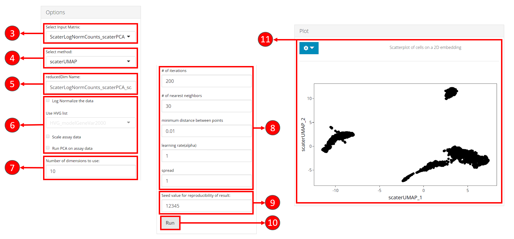
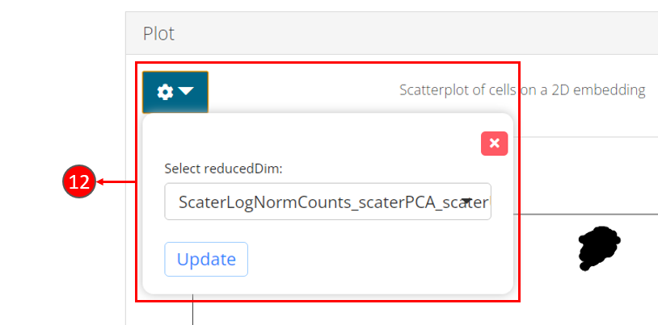
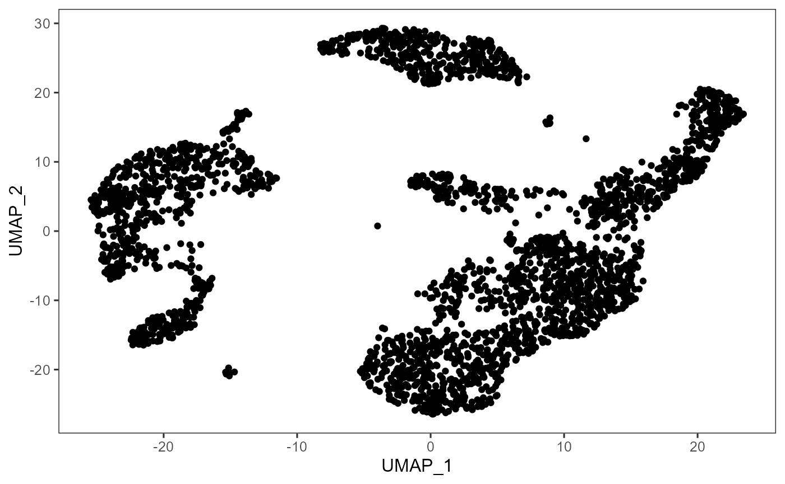

Introduction
2D embedding algorithms (tSNE/UMAP) can be run through the singleCellTK toolkit using both interactive shiny application and R console. For the interactive analysis, the toolkit offers a streamlined workflow to both compute metrics for embedding and then visualize the results using interactive plots. For the console analysis, the toolkit offers a single wrapper function runDimReduce to compute metrics for any of the integrated algorithms.
Methods available with the toolkit include tSNE & UMAP from Seurat [1][2][3][4] package, tSNE from Rtsne [5][6] package and UMAP from scater [7] package.
To view detailed instructions on how to use these methods, please select ‘Interactive Analysis’ for using normalization in shiny application or ‘Console Analysis’ for using these methods on R console from the tabs below:
Workflow Guide
In general, both sub-tabs offer options for selection of data items and choice of parameters on the left side, and a visualization panel on the right side of the interface. A detailed workflow guide to run and visualize dimensionality reduction (DR) algorithms is described below:
- To begin the DR workflow, click on the “Feature Selection & Dimensionality Reduction” tab from the top menu. This workflow assumes that before proceeding towards computation of DR, data has been uploaded, filtered and normalized (and optionally variable features have been identified) through the preceding tabs.

- Select “Embedding” sub-tab:
- Select a previously stored/computed input matrix to use with the tSNE or UMAP algorithm.
- Select a specific tSNE or UMAP method for computation. Available methods include tSNE/UMAP from
Seuratpackage, tSNE fromrtsnepackage and UMAP fromscaterpackage.
- Specify a name for the output reduced matrix.
- Specify if the input matrix should be log-normalized before running the tSNE or UMAP algorithm. It is recommended to select this option if the input matrix selected in step 3 is not log-normalized.
7-11. UMAP specific parameters which may vary between different selected methods in step 3. More information about these parameters is available in method specific documentation.
- Start computation of selected method with the specified parameters.
- Once computation is complete, a scatterplot of the cells on the selected 2D embedding is shown in the panel with additional options available in (14).

- Plot specific options can be opened up by clicking on the dropdown button. Users can select another computed embedding to visualize through the plot by clicking on the “Update” button.

Note: Some parameters may differ between different methods and may not have been shown here.
In general, the first step is to compute a dimensionality reduction (e.g. PCA) and then the second step is to visualize the computed results. The usage of functions to compute and visualize results is described below.
1. Compute dimensionality reduction statistics using runDimReduce wrapper function:
sce <- runDimReduce(inSCE = sce, useAssay = "normalizedCounts", reducedDimName = "redDimUMAP", method = "scaterUMAP", nNeighbors = 30, nIterations = 200, minDist = 0.01, alpha = 1)To use the function, input a SingleCellExperiment object that contains the data assay and specify the required parameters (to see a complete list of supported parameters and to copy the function call against each method with the supported parameters, please view the ‘Parameters’ heading at the end of this page).
Function Call for Each Method:
rTSNE:
sce <- runDimReduce(inSCE = sce, useAssay = "normalizedCounts", reducedDimName = "redDimTSNE", method = "rTSNE", perplexity = 30, nIterations = 1000)seuratTSNE:
sce <- runDimReduce(inSCE = sce, useAssay = "normalizedCounts", reducedDimName = "redDimTSNE", method = "seuratTSNE", nComponents = 10, useReduction = "pca", perplexity = 30)scaterUMAP:
sce <- runDimReduce(inSCE = sce, useAssay = "normalizedCounts", reducedDimName = "redDimUMAP", method = "scaterUMAP", nNeighbors = 30, nIterations = 200, minDist = 0.01, alpha = 1)seuratUMAP:
sce <- runDimReduce(inSCE = sce, useAssay = "normalizedCounts", reducedDimName = "redDimUMAP", method = "seuratUMAP", nComponents = 10, useReduction = "pca", minDist = 0.3, nNeighbors = 30, spread = 1)2. Visualize cells as a scatterplot on a 2D embedding (tSNE/UMAP):
#To plot a simple 2D plot for any of the 4 methods i.e. PCA, ICA, tSNE and UMAP
plotDimRed(inSCE = sce, useReduction = "redDimUMAP", xAxisLabel = "UMAP_1", yAxisLabel = "UMAP_2")Example
# Load singleCellTK & pbmc3k example data
library(singleCellTK)
sce <- importExampleData(dataset = "pbmc3k")
# Perform Normalization
sce <- runNormalization(inSCE = sce, normalizationMethod = "LogNormalize", useAssay = "counts", outAssayName = "LogNormalizedScaledCounts", scale = TRUE, trim = c(10, -10))
# Run PCA
sce <- runDimReduce(inSCE = sce, useAssay = "LogNormalizedScaledCounts", reducedDimName = "redDimPCA", method = "seuratPCA", nComponents = 10)
# Run UMAP on the PCA reducedDim
sce <- runDimReduce(inSCE = sce, useReducedDim = "redDimPCA", reducedDimName = "redDimUMAP", method = "scaterUMAP", nNeighbors = 30, nIterations = 200, minDist = 0.5, alpha = 1, spread = 5)
# Plot UMAP
plotDimRed(inSCE = sce, useReduction = "redDimUMAP", xAxisLabel = "UMAP_1", yAxisLabel = "UMAP_2")
Parameters
The runDimReduce function takes in different parameters based on the specific method used for dimensionality reduction. See below for a complete description of parameters for each individual method in the runDimReduce function:
| Method | Parameters |
|---|---|
| rTSNE |
inSCE (input SingleCellExperiment object), useAssay (name of the assay to use), useReducedDim (name of the reducedDim if you want to compute on the reducedDim instead of the main assay leaving useAssay as NULL), useAltExp (name of the altExp slot if you want to compute on an altExp/subset/variable features instead of the main assay), reducedDimName (name of the computed reducedDim), method = “rTSNE,” perplexity (adjust the perplexity tuneable parameter for the underlying tSNE call, default is 30), nIterations (maximum iterations, default is 1000) |
| seuratTSNE |
inSCE (input SingleCellExperiment object), useAssay (name of the assay to use), useAssay (name of the assay to use), useReducedDim (name of the reducedDim if you want to compute on the reducedDim instead of the main assay leaving useAssay as NULL), useAltExp (name of the altExp slot if you want to compute on an altExp/subset/variable features instead of the main assay), reducedDimName (name of the computed reducedDim), method = “seuratTSNE,” nComponents(number of components to use from pca/ica, default is 10), useReduction (either pca or ica) and perplexity (adjust the perplexity tuneable parameter for the underlying tSNE call, default is 30) |
| scaterUMAP |
inSCE (input SingleCellExperiment object), useAssay (name of the assay to use), useAssay (name of the assay to use), useReducedDim (name of the reducedDim if you want to compute on the reducedDim instead of the main assay leaving useAssay as NULL), useAltExp (name of the altExp slot if you want to compute on an altExp/subset/variable features instead of the main assay), reducedDimName (name of the computed reducedDim), method = “scaterUMAP,” nNeighbors (size of local neighborhood used for manifold approximation, default is 30), nIterations (number of iterations performed, default is 200), minDist (minimum distance between embedded points, default is 0.01) and alpha (initial value of learning rate, default is 1) |
| seuratUMAP |
inSCE (input SingleCellExperiment object), useAssay (name of the assay to use), useAssay (name of the assay to use), useReducedDim (name of the reducedDim if you want to compute on the reducedDim instead of the main assay leaving useAssay as NULL), useAltExp (name of the altExp slot if you want to compute on an altExp/subset/variable features instead of the main assay), reducedDimName (name of the computed reducedDim), method = “seuratUMAP,” nComponents (number of components to use from pca/ica, default is 10), useReduction (either pca or ica), minDist (minimum distance between embedded points, default is 0.3), nNeighbors (size of local neighborhood, default is 30) and spread (effective scale of embedded points, default is 1) |
Individual Functions
While the runDimReduce wrapper function can be used for all dimensionality reduction algorithms including PCA/ICA & additionally for tSNE/UMAP, separate functions are also available for all of the included methods. The following functions can be used for specific methods:
TSNE from Rtsne package:
sce <- getTSNE(inSCE = sce, useAssay = "logcounts", reducedDimName = "TSNE", nIterations = 1000, perplexity = 30, run_pca = TRUE, ntop = NULL)The parameters to the above function include: inSCE: an input SingleCellExperiment object useAssay: name of the assay to use for normalization reducedDimName: name of the computed PCA reducedDim nIterations: maximum iterations perplexity: perplexity parameter run_pca: logical value indicating if tSNE should be run on PCA components ntop: number of top features to use as a further variable feature selection
TSNE from Seurat package:
# Recommended to find variable features & compute PCA before running runSeuratTSNE
# sce <- runSeuratFindHVG(inSCE = sce, useAssay = "seuratScaledData")
# sce <- runSeuratPCA(inSCE = sce, useAssay = "seuratScaledData", reducedDimName = "pca", nPCs = 20, verbose = TRUE)
sce <- runSeuratTSNE(inSCE = sce, useReduction = "pca", reducedDimName = "seuratTSNE", dims = 10, perplexity = 30)The parameters to the above function include: inSCE: an input SingleCellExperiment object useReduction: either “pca” or “ica” previously computed in the input object reducedDimName: name of the computed tSNE reducedDim dims: number of components to use from the useReduction parameter perplexity: perplexity parameter
UMAP from scater package:
sce <- getUMAP(inSCE = sce, useAssay = "counts", reducedDimName = "UMAP", logNorm = TRUE, nNeighbors = 30, alpha = 1, nIterations = 200, minDist = 0.01, spread = 1, pca = TRUE, initialDims = 50)The parameters to the above function include: inSCE: an input SingleCellExperiment object useAssay: assay to use for UMAP computation reducedDimName: a name to store the results of the dimension reduction coordinates obtained from this method logNorm: whether the counts will need to be log-normalized prior to generating the UMAP nNeighbors: size of local neighborhood used for manifold approximation nIterations: number of iterations performed during layout optimization alpha: initial value of “learning rate” of layout optimization minDist: effective minimum distance between embedded points spread: effective scale of embedded points pca: logical value indicating whether to perform dimension reduction with PCA before UMAP initialDims: number of dimensions from PCA to use as input in UMAP
UMAP from Seurat package:
# Recommended to find variable features & compute PCA before running runSeuratUMAP
# sce <- runSeuratFindHVG(inSCE = sce, useAssay = "seuratScaledData")
# sce <- runSeuratPCA(inSCE = sce, useAssay = "seuratScaledData", reducedDimName = "pca", nPCs = 20, verbose = TRUE)
sce <- runSeuratUMAP(inSCE = sce, useReduction = "pca", reducedDimName = "seuratUMAP", dims = 10, minDist = 0.3, nNeighbors = 30, spread = 1)The parameters to the above function include: inSCE: an input SingleCellExperiment object useReduction: either “pca” or “ica” previously stored in the input object reducedDimName: a name to store the results of the dimension reduction coordinates obtained from this method dims: number of dimensions to use from useReduction parameter minDist: effective minimum distance between embedded points nNeighbors: size of local neighborhood used for manifold approximation spread: effective scale of embedded points